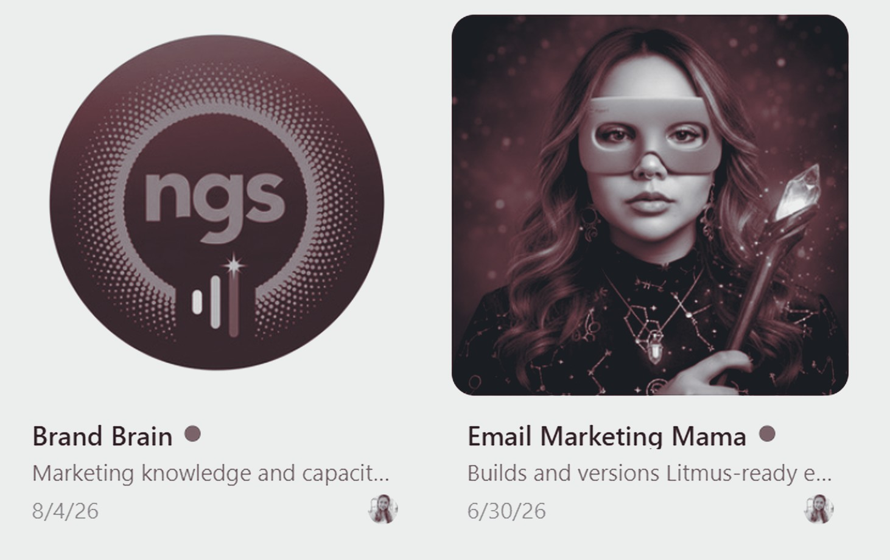

Danielle
Kartika
Microsoft. BMW. BPAY. Now the fund people retire on. Same discipline: make complicated things findable, usable and trusted.
Agency trained, in house accountable.
Fifteen years agency side, leading complex digital projects for large brands. Since 2022 in house at a superannuation fund, where the work moved past production into digital experience and transformation.
I led the digital workstream when the fund moved to a new administration platform and Customer Hub, bringing marketing, product, technology, member services, compliance and external partners into one experience members could actually navigate. I am now leading the migration from a legacy CMS to Adobe Experience Manager.
I own what gets built, what it should do for the customer, and whether it did.
Agency side, 2007 to 2022
Fifteen years in agencies
Microsoft / Qantas / Vodafone / BMW / Hyundai / KIA / Mini / Nivea / BPAY / OSKO / TAL / REST Super / Sharesies / Defence Force Australia
Fifteen years learning to deliver. Four years learning what is worth delivering.
In house, 2022 to now
Then in house, where the title stopped fitting
Where I've led
Making the case, then making it work
Carried a fund's members through a month with no portal
Every member had to register again. I gathered the insight, put up the recommendation, and took six functions with me before anything went out. Complaints halved, call volume down 60 per cent by week two.
Built somewhere for members to land while the door was shut
Marketing was paused for months either side. People still arrived, so I made the case for somewhere to capture them. Around 150 joined while the portal was dark.
Found the word that was keeping members out
A projection tool only two cohorts would open. The data said the product was fine and the name was the barrier, so I recommended the rename and ran the redirect programme behind it. Clicks up 101 per cent, now the most visited page on the site.
Put the unflattering number on a public page
Service data that lived in an annual report, rebuilt around what members worry about rather than by department, including the escalation rate to the external complaints authority. A trust claim members can check.
Then I started building the tools instead of waiting for them.
Two agents in production for the fund. One is a brand and compliance brain that checks work against brand guidelines, compliance guardrails and the right disclaimers before it goes anywhere near approval. The other is a campaign builder that takes production to live and cuts it by at least half, which is days back on every campaign.
Outside work I built an AI marketing agent layered over an Obsidian knowledge graph, running independently for Marvel Homes.

Track record
Nineteen years, in order
- 2022 to now
- Senior Digital Producer, digital experience and transformationNGS Super. Website transformation for a new administration platform, now leading the migration to Adobe Experience Manager.
- 2017 to 2022
- Senior Digital Producer, BMF AdvertisingLarge scale websites and integrated campaigns for financial services, government and enterprise. Website transformation for BPAY.
- 2007 to 2017
- Digital Project Manager and Producer, agency sideWebsites, CRM, email and integrated campaigns for Microsoft, Hyundai, Vodafone, Qantas, Nivea and Defence Force Australia.
Education
Bachelor of Economics / UX Designer Certificate, General Assembly
Platforms
Adobe Experience Manager / Adobe Journey Optimizer / Salesforce Marketing Cloud / Kentico / GA4 / Google Search Console / SEMrush / Screaming Frog / Hotjar / Figma / Miro / Obsidian knowledge graph with Cursor agents / Agentic campaign builder on Claude / HTML / CSS